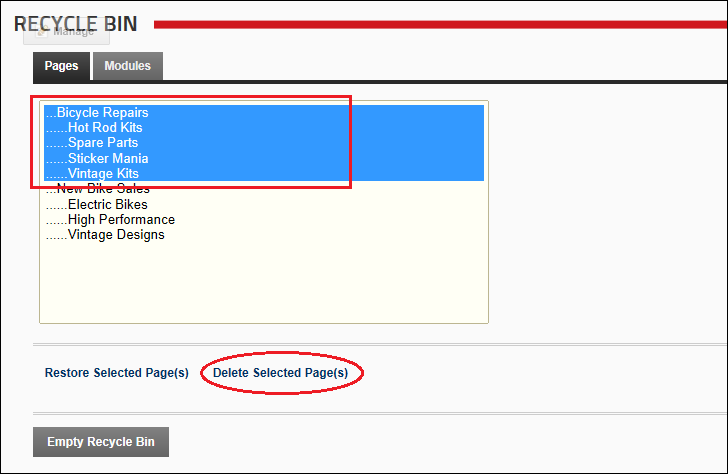

Deleting Pages from the Recycle Bin
How to permanently delete one or more pages (including modules and module content) using the Recycle Bin module. The task can be performed by a Authenticated users who have been granted Edit Module (Edit Content) permissions.
- Navigate to Admin >
 Recycle Bin - OR - Navigate to a Recycle Bin module.
Recycle Bin - OR - Navigate to a Recycle Bin module.
- Select the Pages tab.
- Optional. If multiple languages are enabled on your site, select one of the following options:
- Show pages and modules from all languages.
- Show pages and modules in current language only.
- Click on a page name to select it. To select multiple pages, hold down the Ctrl key when selecting.
- Click the Delete Selected Page(s) button. This displays the message "Are You Sure You Wish To Permanently Delete This Page?"
- Click the Yes button to confirm.

Deleting Pages from the Recycle Bin